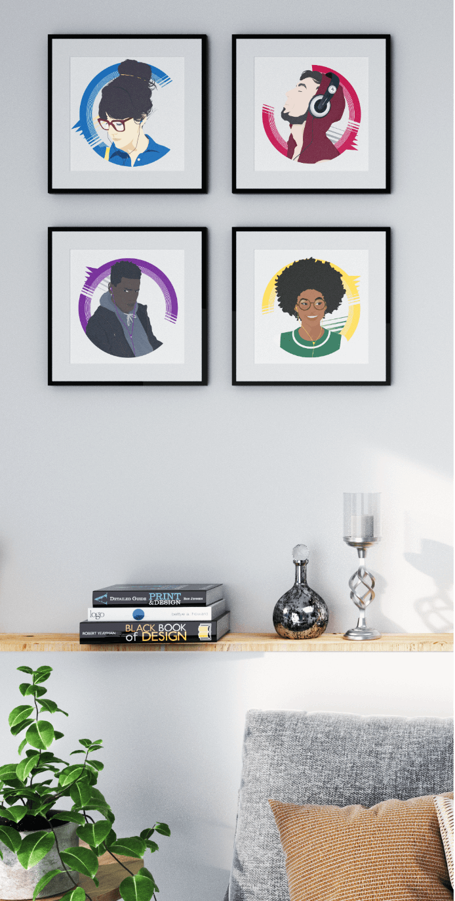

{% include previous-next.html previous="datatopia.html" next="modesettravaux.html" padding="one" prev-title="Datatopia" next-title="Modes & Travaux" %}

<div class="row portfolio">
	<div class="col-lg-7 col-sm-12">
      
      
    </div>
    <div class="col-lg-5 col-sm-12">
      
    </div>
    <div class="col-lg-12">
      
    </div>
    <div class="col-lg-6">
      
    </div>
    <div class="col-lg-6">
      
    </div>
</div>
{% include previous-next.html previous="datatopia.html" next="modesettravaux.html" padding="two" prev-title="Datatopia" next-title="Modes & Travaux" %}
